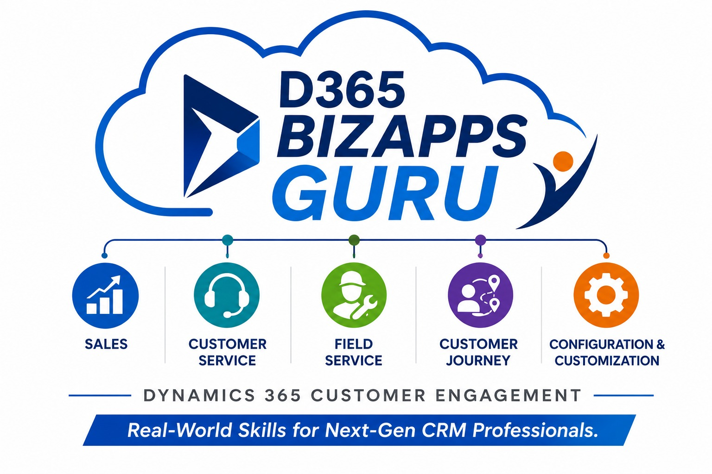

Real-World Skills for Next-Gen CRM Professionals
Accelerate your career with enterprise-level Microsoft Dynamics 365 CRM and Power Platform learning designed for both IT and Non-IT professionals. Gain practical exposure to Functional Consulting, Technical Concepts, Configurations, Customizations, Integrations, Real-Time Activities, Go-Live Processes, Production Support, and enterprise business operations aligned with actual corporate projects.
Microsoft Dynamics 365 CRM Learning Hub provides real-time enterprise-level learning for Functional & Technical Consultants covering Dynamics 365 CRM, Power Platform, Configurations, Customizations, Integrations, Real-Time Scenarios, Testing, and Implementation Methodologies.
Contact on WhatsAppYou should choose Microsoft Dynamics 365 because it is one of the few enterprise platforms that connects a company's sales team, customer support, finance department, operations, and business processes into one unified cloud ecosystem. Instead of forcing organizations to use multiple disconnected software applications that struggle to communicate with each other, Dynamics 365 seamlessly integrates Customer Engagement (CE) with Finance & Operations (F&O) in real time. When sales activities are updated, related financial invoices, inventory operations, customer records, and backend business processes automatically synchronize across the enterprise environment. This real-time integration capability helps organizations improve productivity, automate workflows, reduce manual effort, and streamline business operations across departments. Mastering Microsoft Dynamics 365 CRM and Power Platform makes professionals highly valuable to global organizations because companies actively seek consultants who understand complete enterprise business journeys, integrations, implementation methodologies, Go-Live activities, production support, and real-time corporate operations rather than isolated software tools alone.
Learn from experienced professionals with practical enterprise project exposure in implementations, production support, incident management, integrations, deployments, testing cycles, and consultant responsibilities followed in actual corporate environments.
The learning structure focuses on practical business process understanding, Functional & Technical concepts, implementation lifecycle activities, integrations, Go-Live processes, production support, and real-time enterprise consultant responsibilities.
WhatsApp: +91 7799618608
Email: d365bizappsguru@gmail.com